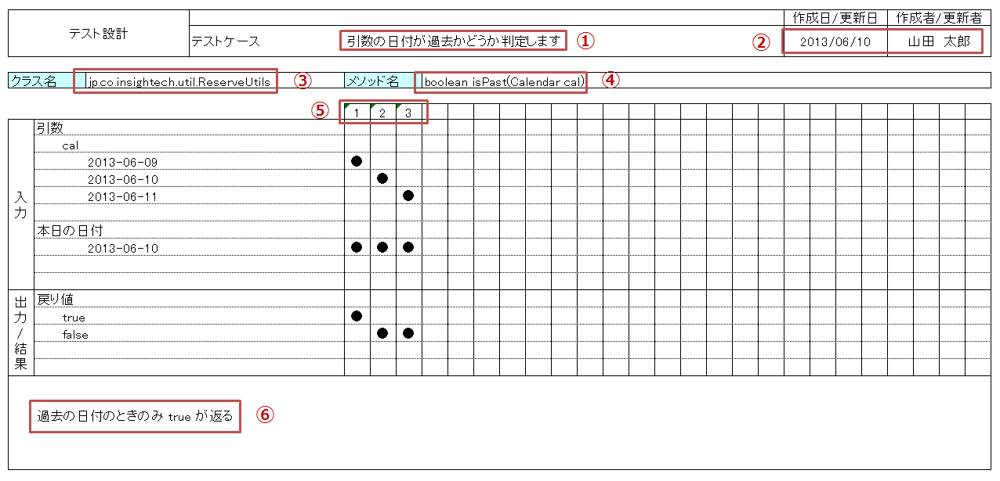
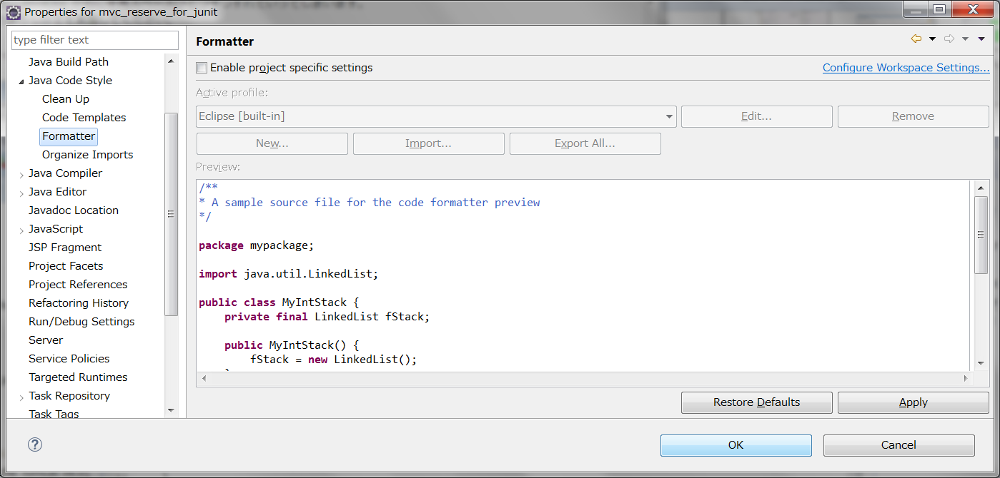
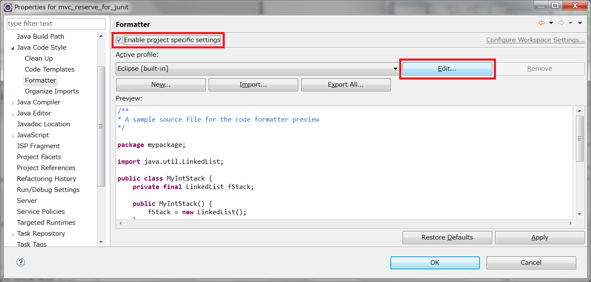
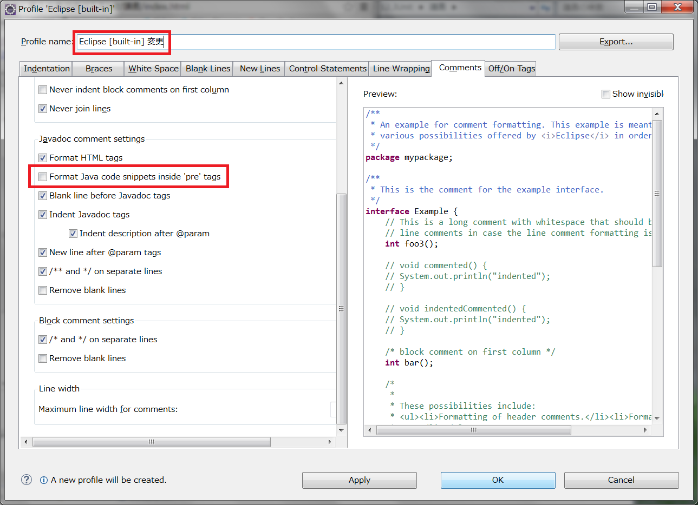

ユーティリティメソッドの単体テスト
ユーティリティメソッドの単体テスト
まずは、独立性が高そうなユーティリティ 用のメソッドから単体テストを開始することにします。
ユーティリティメソッドについては、テスト項目に関してはさほど難しいことはないと思いますので、
ここでは、直交表の記入方法や、テストクラスに対する JavaDoc 作成の規則について詳細に見ていくことにします。
MVC施設予約でのユーティリティメソッドは以下のような一覧となります。
各メソッドに対して、エクセルのシートを分け、直交表を１つずつ作成します。
テスト対象となるのは、public なメソッドのみです。
| クラス名 |
メソッド名 |
可視性 |
テスト対象 |
| jp.co.insightech.util.ReserveUtils |
boolean isPast(Calendar) |
public |
○ |
| |
Reserve getReserve(int, int, Vector) |
public |
○ |
| |
Calendar getToday() |
private |
- |
public なユーティリティメソッドは2つですので、直交表を2シート分作成することになります。
ユーティリティメソッドの直交表
直交表の記入規則を以下のように設定します。
- テストの説明は、メソッド上部の JavaDoc をそのまま記入
- 更新日、更新者を必ず記入
- クラス名は完全クラス名（パッケージ込み）を記入
- メソッド名は、アクセス修飾詞を除く、シグネチャ全てを記入
- テスト項目の連番が、テスト項目数と合致するように記入
- 備考があれば欄外に記入
- できるだけセルの結合はしないで記入（修正しづらくなるため）
- 罫線等が消えてしまった場合は引きなおして記入
今回、直交表はあくまでパターン洗い出しに使用する資料ですが、
基本的に開発で作成するドキュメントは全てが納品物となる可能性があります。
「納品物」＝「商品」 ですので、大きく様式を変更してしまったり、可読性の低いものにしてはいけません。
また、誤字・脱字、未記入欄や、細かい部分のレイアウト崩れなどもないように気を配ります。
1つのメソッドについて、直交表を作成してみました。
このユーティリティメソッドでは、先述の境界値テストの観点からチェックを行っています。
上記の直交表記入のルールに沿っているかどうかをチェックします。

特に問題がなさそうですので、次に進みます。
テストクラスの JavaDoc
次に、テストクラスを作成し、実際にテストを行っていきますが、
今回は、テストクラスに記述されている JavaDoc を単体テスト仕様書として扱うことにしていますので、
最初に、テスト仕様を JavaDoc として記入してしまいます。
以下のような規則に沿って記入します。
- <pre>タグで全体を囲う
- 【概要】、【条件】、【実行】 、【結果】を順番に記入する
- 【概要】では、このテストケースの説明 （他のテストケースとのパターンの違いがわかるように） を簡潔に記入する
- 【実行】、他のメソッドの呼び出しの記述部分は{@link}タグを使用する
- 各項目の見出しとして ・（全角の中点）を使用する
- 全角スペースは使用しない （文字種テストで条件に挙げるような場合を除く）
通常、このような細かなことを注意されることはあまりありません。
ドキュメントを作成する際には、その場にある見本に沿って記述することが普通です。
/**
* <pre>
* 【概要】
* ・過去の日付のとき、trueが返ること.
*
* 【条件】
* ・引数 : cal = 2013-06-09を表すCalendarクラス
*
* 【実行】
* ・{@link ReserveUtils#isPast(Calendar)}
*
* 【結果】
* ・戻り値 : true
* </pre>
*/
@Test
public void testIsPastWhenYesterday() {
fail("まだ実装されていません。");
}
メソッド名は、テストを表すような名前をつけるのが慣例です。
「isPast」 メソッドのテストですので、「testIsPast」 という部分は共通になります。
その後ろに、「WhenYesterday」のように、【概要】を 端的に表すような名前をつけます。
Eclipse の設定変更
今回、<pre> タグを使用しているため、
テストクラス内でフォーマットをかけると、JavaDoc が右に半角スペースひとつずつずれていってしまいます。
これを避けるために、Eclipse 上で以下のような設定を実施してください。
プロジェクトを右クリック → [プロパティ] → [Javaコード・スタイル] → [フォーマッター]

[プロジェクト固有の設定を可能にする] にチェック → [表示](Edit)

ポップアップ画面で、[コメント]タブを選択、[Java コード・スニペットをフォーマット]のチェックを外す → [OK]

プロパティ画面に戻ったら、[OK] で設定終了です。
JUnit テスト
単体テスト仕様書としての JavaDoc の記入が終了したら、実際のテストの中身を実装していきます。
ユーティリティクラスの JUnit の内容については、JUnitの使い方が参考になりますので、ここでは割愛します。
上記の直交表についての、テストクラスは以下のようになりました。
/**
* <pre>
* 【概要】
* ・昨日の日付は過去と判断されること.
*
* 【条件】
* ・引数 : cal = 2013-06-09を表すCalendarクラス
*
* 【実行】
* ・{@link ReserveUtils#isPast(Calendar)}
*
* 【結果】
* ・戻り値 : true
* </pre>
*/
@Test
public void testisPastWhenYesterday() {
Calendar cal = Calendar.getInstance();
cal.set(2013, 5, 9);
assertTrue(ReserveUtils.isPast(cal));
}
/**
* <pre>
* 【概要】
* ・今日の日付は過去でないと判断されること.
*
* 【条件】
* ・引数 : cal = 2013-06-10を表すCalendarクラス
*
* 【実行】
* ・{@link ReserveUtils#isPast(Calendar)}
*
* 【結果】
* ・戻り値 : false
* </pre>
*/
@Test
public void testisPastWhenToday() {
Calendar cal = Calendar.getInstance();
cal.set(2013, 5, 10);
assertFalse(ReserveUtils.isPast(cal));
}
/**
* <pre>
* 【概要】
* ・明日の日付は過去でないと判断されること.
*
* 【条件】
* ・引数 : cal = 2013-06-11を表すCalendarクラス
*
* 【実行】
* ・{@link ReserveUtils#isPast(Calendar)}
*
* 【結果】
* ・戻り値 : false
* </pre>
*/
@Test
public void testisPastWhenToday() {
Calendar cal = Calendar.getInstance();
cal.set(2013, 5, 11);
assertFalse(ReserveUtils.isPast(cal));
}
※実際にこのテストクラスをテストしてみると、失敗すると思います。
「現在の日付」がテストするときによって変わってしまうためですね。
これを解決するためにはモックオブジェクト等を用いますが、その説明は Dao クラスのテスト以降に行います。
今回このテストを実行するなら、cal.set() の部分をそれぞれテストする日付に合わせて書き換えてください。
他のメソッドについても同じように、
- 直交表の作成
- 空メソッドの実装と、JavaDoc（テスト仕様） の記入
- テストメソッドの実装
という手順を繰り返して、全ての public メソッドに対する実装を行います。
尚、テストクラスはメソッドごとではなく、クラスごとに作成しますので、
複数のメソッドをもつクラスのテストを実施する場合は、全てのメソッドに対するテストケースを１つのテストクラスの中に記述します。
©日本インサイトテクノロジー株式会社